Douze pages : une par composition de commun/compositions.md, puis quatre construites autour d’un objet en 3D (Blender, Three.js, WebGL), chacune pour un métier différent. Chaque page est testée par un client simulé qui a « payé 25 000 € » : il la note sur 100 et dit s’il paierait (seuil 85). Marques, chiffres, avis et prix sont fictifs ; les photos sont provisoires.
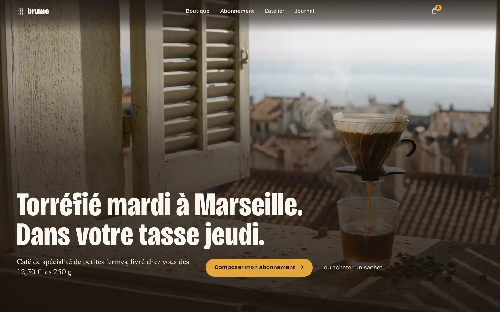
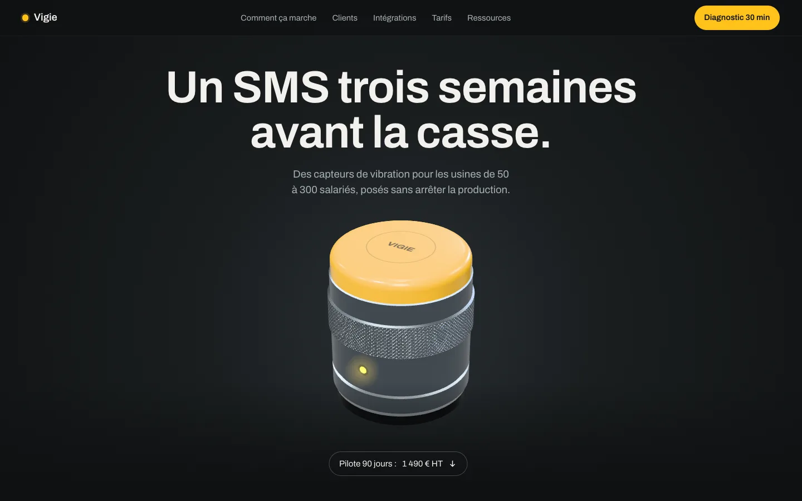
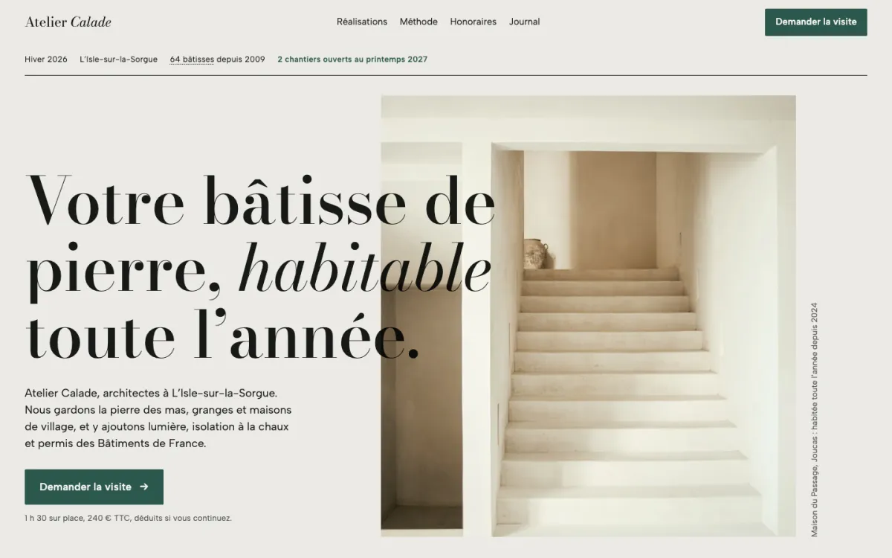
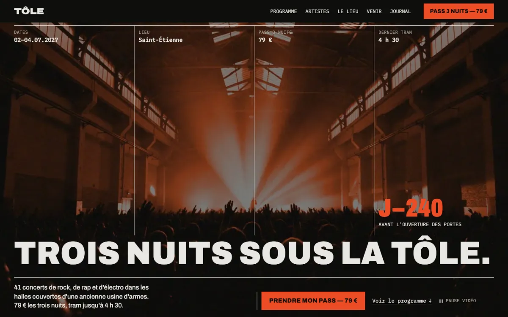
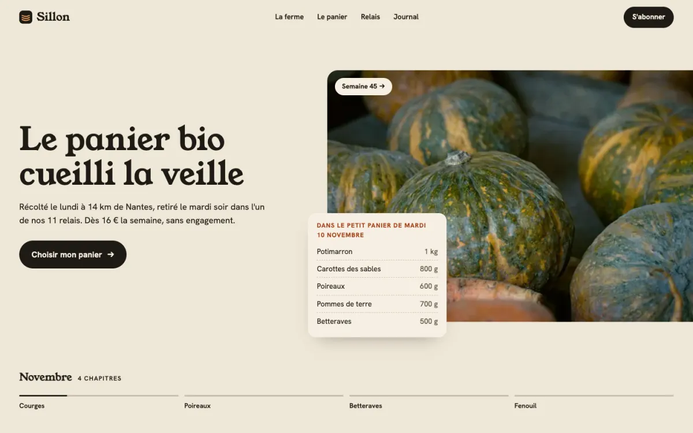
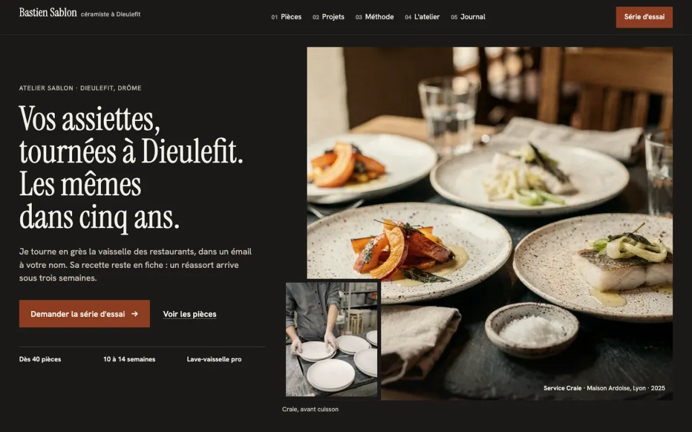
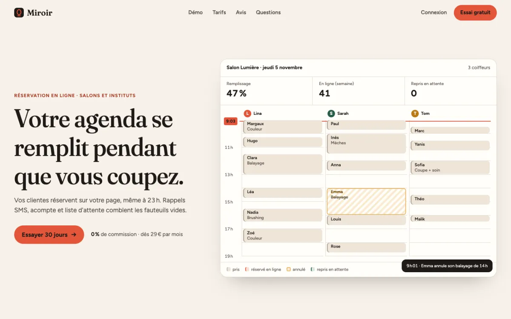
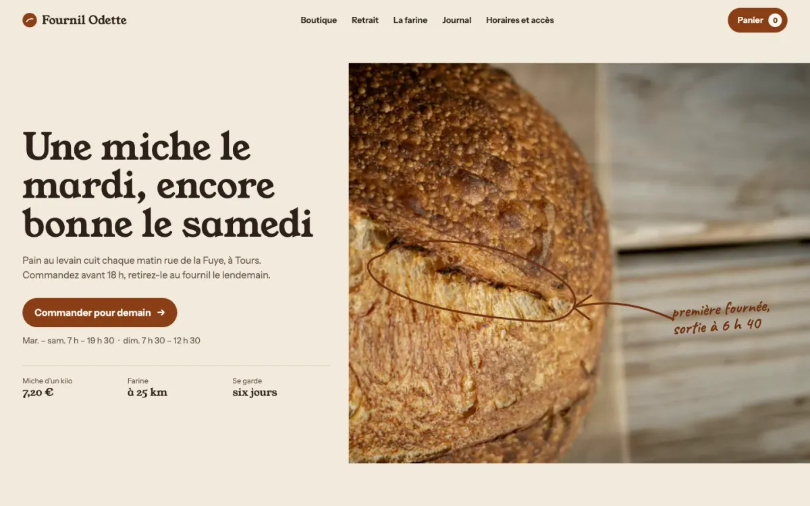
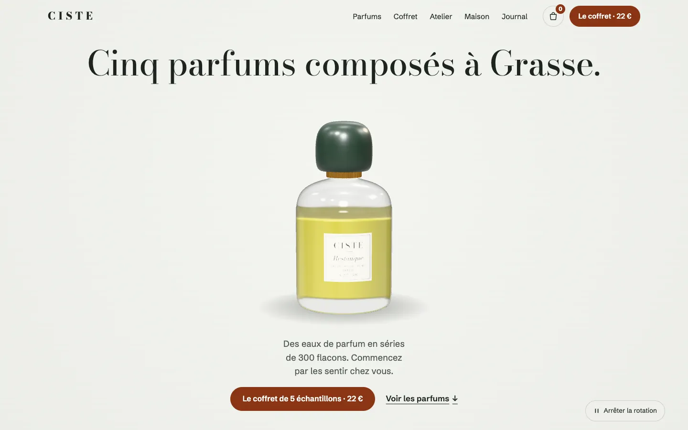
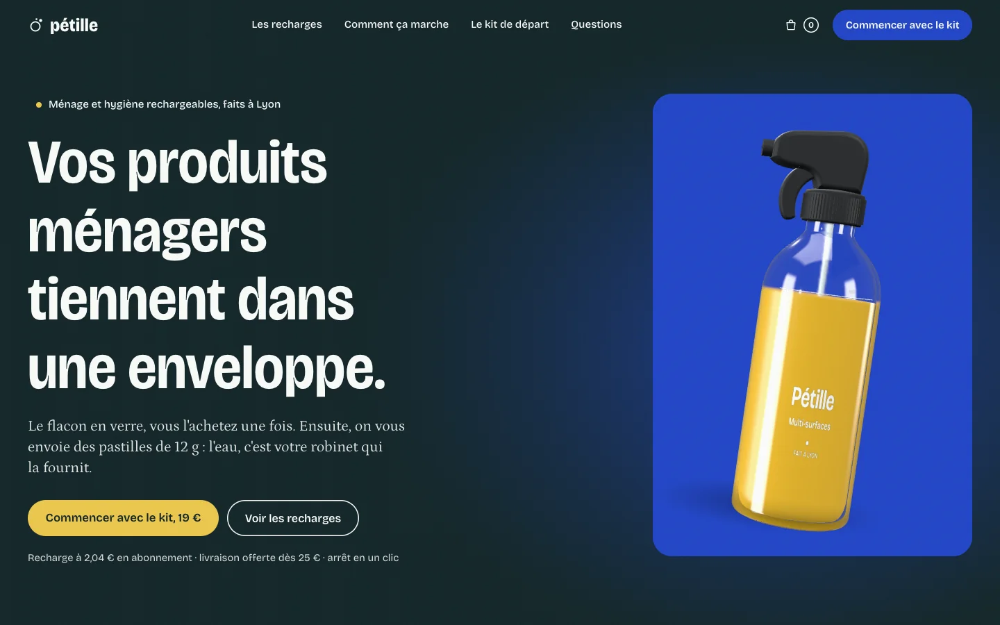
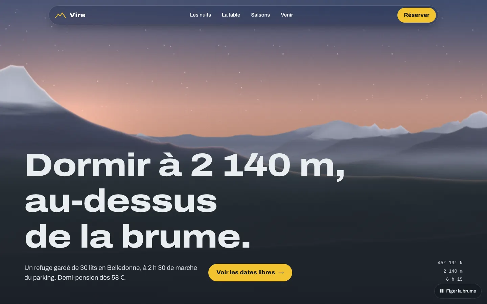
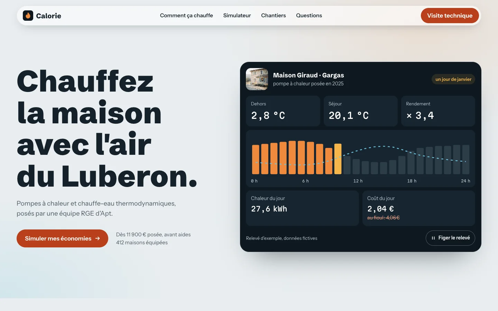